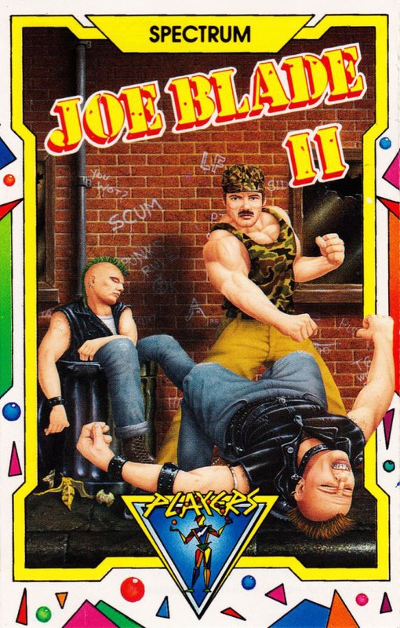
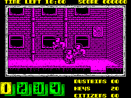

| Publisher: | Players |
| Price: | £1.99 Cass |
| Year: | 1988 |
| Source: | CRASH, Issue 57 |
Murderers, muggers, punks and other not very nice people fill the streets. It’s 1995 and the public are being held hostage in their own homes. Who can rid us of these hooligans, guttersnipes and lovers of David Sylvian dirges?
Need you ask? It’s Joe Blade of course.
After defeating the nefarious Crax Bloodfinger and his henchmen in Joe Blade (Issue 44, 84%), Blade (Joe), scourge of all nasty villains (ie Phil King and Nick Roberts), has returned in his never-ending fight for truth, justice, and the chance to hit baddies very hard and not feel guilty about it.

So enter stage left Joe Blade — there are 20 citizens to be rescued within ten minutes, or it’s roller blinds for you. With innocent bystanders wandering about, the powers that be have taken away Joe’s gun, forcing him to alternative means of disposal. Now a press of the fire button sends Joe leaping into the air, until his boot gently collides with a baddie’s bonce (scoring 200 points in the process).
Most of the doors Joe passes through are unlocked, but some need opening with special keys, and 20 are provided at the start of the game, although more can be obtained (along with a 500-point bonus) when you collect five bouncing dustbins.
Don’t forget to rescue hostages — they can be found doddering on the streets in their ‘Columbo’-style raincoats. Run into one of these unhappy citizens and you access the subgame. This is quite simple: rearrange the number code into its correct order in 60 seconds, or Joe dies (this ends the game, as you only have one life). Disaster also strikes if the timer runs out, although running into alarm clocks which are occasionally encountered, resets the timer to ten minutes. So hurry Joe, time’s running out.
Monochrome sprites and backgrounds cut out the risk of colour clash nicely, and the game’s general appearance is fine. Although Joe has lost his gun he has little difficulty despatching the baddies with his ballet dancer leap.
Sadly, though I prefer this to the previous offering, boredom once again soon grabbed me. The backgrounds are all detailed, but they look too similar, the search for citizens became tedious, and I found the puzzles (once sussed) very simple. But short term Joe Blade II’s playable, which wins much of my vote. See what you think.
MARK ... 83%
If you thought that Players couldn’t go one better than the original Joe Blade, then you ain’t seen Joe Blade II matey! This takes the original idea and makes it doubly addictive and much more challenging. It has all the fun and excitement with new subgames and excellently detailed new graphics. The music and sound effects are just right for this type of game. There is enough playability in Joe Blade II to last a life time — I just can’t wait to play Joe Blade III!
NICK ... 92%
After an impressive debut, Joe’s second appearance is no disappointment. Most striking are the number of catchy 128K tunes which accompany both the front end and the four subgames. Kicking punks soon gets repetitive, but what really makes Joe Blade II so playable are the four puzzling subgames. The concept of arranging numbers in the correct order sounds easy, but you tend to make silly mistakes when under the pressure of a small time limit. I just love the way the program sadistically taunts the player by announcing that if the puzzle isn’t solved you’ll ‘die in 60 seconds’! My only gripe is that perhaps the task of finding the raincoat-clad citizens is a little too easy. Once the play area is mapped out, completion shouldn’t take too long. But in the meantime there’s plenty of fun to be had in this compulsively addictive sequel.
PHIL ... 92%
| Joysticks: | Cursor, Sinclair, Kempston |
| Graphics: | Cutely-animated sprites on monochromatic backgrounds |
| Sound: | A host of 128K tunes throughout the game |
| General rating: | A worthy successor to Joe Blade with superb presentation and addictive gameplay |
| Presentation: | 87% |
| Graphics: | 85% |
| Playability: | 84% |
| Addictive qualities: | 83% |
| Overall: | 90% |
{kind=link}